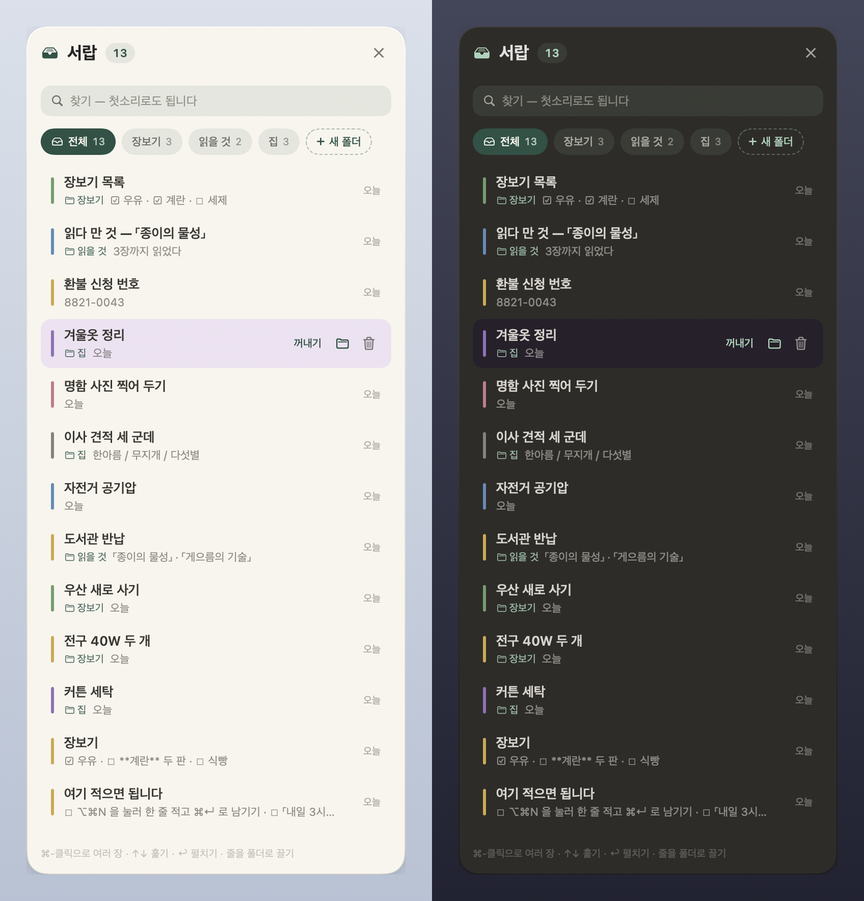
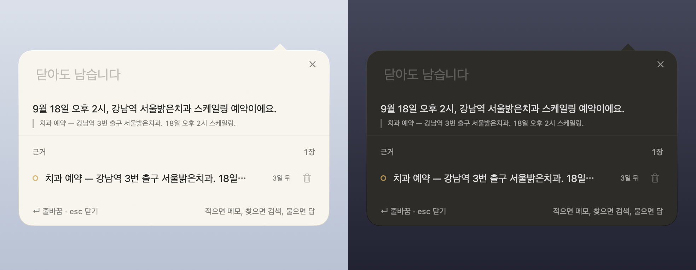
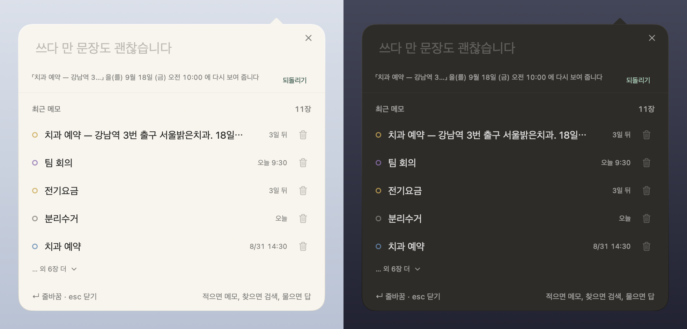

It assumes you are lazy, and does the rest.
-
Two keys and it is written
⌥⌘N puts a bubble over whatever you are doing. Type a line, press ⌘↵, and you are back where you were. Nothing appears in the Dock or the app switcher.
-
There is no save button
The paper on the desktop is the file. Stop typing and it is already written to disk. Close a note with esc and it goes into the drawer, not into the trash.
-
The date is read for you
“dentist tomorrow at 3” becomes an appointment, and the calendar takes it. Korean, English, Japanese and Chinese are read from the same table, in the same line. You never learn a format.
One lap — write, get there, recall, tuck away, come back.
- Write One line into ⌥⌘N. If a date is read, a chip appears and the calendar takes over.
- Get there An appointment with a map link — the box asks where you are leaving from and writes the route onto the note.
- Recall Set when to see it again. The appointment itself stays put.
- Drawer Papers fly into the corner tab; sort into folders, take them back out.
- Come back When the time comes, the paper rises to the desktop on its own.
A screen recording of the real app. The app moved its own hands
(scripts/record-demo.sh); every window on screen is real. The recording is in Korean.
New in 0.9.0
Eight papers. Pick one and this page is printed on it.
The app used to have one paper. Now it has eight, and whichever you choose, the notes, the calendar, the drawer and the home screen widgets are all printed on it. So is this page — the ground, the dot grid, the green and the amber below all change when you press one of these.
What a paper changes
- The ground, the cards, the ink and the second ink
- The accent — as a surface, and as text on paper
- “Today”, the highlight wash, the link colour
- The strength and colour of the dot grid
- The six memo inks
What it never changes
- The five spacing steps and the four type sizes
- The corner radii — 14 card, 20 panel, 10 control, 8 chip
- Target sizes, and how fast anything moves
- The red of delete, and the weekend colour in the calendar
Delete stays red and Saturday stays blue in every paper because those two are not taste, they are a promise — the button you cannot come back from, and the way a Korean calendar is read. Changing your paper should not make you learn them again. Both only flip their brightness, following whether the paper is dark.
Or bring your own. Settings → Theme → “Choose your own” gives you four dials: the accent colour, a colour that soaks into the paper, the text size, and the grain. Whatever you pick is pushed back above the WCAG AA floor before it is used — 4.5:1 for body text, 3:1 for the rest. Picking a colour should not be the freedom to make your own notes unreadable.
Two of the eight are dark papers in light mode too. Midnight and Forest Night say so themselves rather than asking the system, so the paper edges, the shadows and the ink all turn over with them — try either one above and this page does the same. Thirty-two combinations (eight papers × light, dark and the two high-contrast variants) are measured by test, at eight places where ink sits on paper.
New in 0.9.0
Paste something long and the paper grows to fit.
A fresh sheet is small, because most notes are one line. Paste eight paragraphs into it and the old one just scrolled — a scrollbar tells you there is more without telling you what. Now the note grows downward, keeping its top edge where you put it, so the line you were reading stays where it was, up to 70% of the screen. It only ever grows: a note that gets shorter keeps its room for the next thing you type.
Width only widens — to a comfortable 560pt reading measure — when lines actually wrap, so a list of one-line items is left alone. A size you set by hand is yours: the app leaves it alone until the text overflows it by more than 96pt, because a note you folded up small was folded on purpose. And typing in a long note no longer stutters — only the lines whose styling changed are redrawn, which took a 297 ms frame down to 1 ms.
New in 0.9.0
Four widgets, redrawn — what to do now, without opening anything.
Now is the band from the app itself — what to see again today, today’s appointments, and anything pinned, nearest time first. Next is the closest thing with a time on it; if you saved a route to it, the second line says when to leave and what to board, otherwise the remaining time runs down on its own. Calendar is this month, today circled and a dot under every day that has something. Write opens the pen.
A 3 pt capsule of colour at the start of a row is how a widget says which note this is — colour shows in the edge and the ink, never by flooding the card. “Seen” works on the home screen without opening the app, and takes the card down here and in the app at once. The large Now hangs the unchecked items of a checklist under its card, and a tap checks them right there — written into the file, so the paper on the Mac shows the same tick. All four come in lock-screen families as well, they follow the paper you chose, and they read the same Markdown files the app does — no index, no server. Widgets ship in the App Store editions; the GitHub build is a SwiftPM bundle and cannot carry an extension.
The same notes, on your phone.
The iPhone app reads the same Markdown files through iCloud — no account of ours, no sync to set up. Jot it down, decide when to see it again, and the phone brings it back. Asking and telling work there too, and anything that needs no model works without one. Siri and the Action button have a door too — say “Write in lazymemo” and it becomes a note without opening the app; “What’s on today” reads Now aloud.
- Write The app reads the date; one tap puts it on the calendar.
- Get there A map link and a time, two answers, and the route card sits on the note.
- Now The bell sets when to see it again; what is coming up sits at the top.
- Banner Turn notifications on once. The banner says what to catch, and holds buttons.
Recorded in the iOS simulator with the app moving its own hands. The iPhone app is in App Store review. The iPhone app is on the App Store.
The rest of it.




Recall
Jot it down and decide only when to see it again — “an hour from now”, “9 am tomorrow”, or say it: “remind me Friday at 10”. The appointment stays where it is; the meeting is at 3, the recall at 2:30. Notification banners hold buttons, so an hour’s snooze never opens the app.
Old things step back
A list you have fully checked, or a note you marked done, steps back three days later; a past appointment once the next day ends. Not deleted — the menu says “N tucked away”, and brings them back one by one or all at once. A past date is not “done”: lists with open boxes, notes you brought back, notes you set to revisit later, and pinned notes are never moved, and what you missed stays listed as “N missed”.
Notes are files
Markdown in
~/Documents/lazymemo/. Open them in Finder, edit them anywhere. Delete lazymemo and the notes remain. Settings → “Sync with iCloud…” moves the folder into LazyMemo in iCloud Drive, which is where the iPhone looks.Throw things at it
Four doors, one set of rules. Select text anywhere → Services → “Write to lazymemo”; ⌥⌘V turns the clipboard into a note;
lazymemo://add?text=…from Shortcuts or Raycast; and the share sheet on iPhone. A place shared from any maps app becomes the note’s place.Claude, if you want it
The GitHub edition builds an MCP server. Register it and Claude Desktop can book, list and file your notes. No API key — lazymemo does not call Claude, Claude calls lazymemo. There is no permanent-delete tool for it to reach; delete means
.trash/for 30 days.Motion you can turn off
Every movement in 0.9.0 speaks one of three words — quick, settle, fly — instead of the six different speeds it had grown. Turn on Reduce Motion and the calendar, the lists and the chips stop moving, which they did not always do before.
Keys
| ⌥⌘N | Quick input. Write, search, ask, or tell it what to do. Typing filters your existing notes as you go. |
| ⌘↵ | Done. The button says what will happen. ↵ is a new line — notes are not one line long. |
| ⌥⌘V | Clipboard to note. Text or a picture becomes a new paper without opening anything. |
| esc | Close. The box remembers what you were writing, across restarts and releases. |
| ⌘, | Settings — input, paper, where notes live, position, sharing and notifications, in one window. |
New in 0.9.0
Ask it. If your notes don’t know, it reads the web and writes it down.
This is a preview. Answering from your notes and taking instructions stay on the device, but web answers lean on a keyless public web search (DuckDuckGo) — not an official API, so it can stop working at any time, and the app says so when it does. Nothing goes out until you press “Search the web” or say “on the web …”.
Send “when was the dentist?” with ✦ (⌥⌘↵ on the Mac) and the answer comes out of your own notes, with the original line quoted under it. Plain save keeps the question as a note — saving is always saving. When nothing fits, the box offers “search the web” — one line of your question goes to DuckDuckGo with no key and no account, and then the app reads the text of the top three pages and compares them before answering. Every claim carries a source you can open.
Then it asks what to do with it: keep a note, tidy it into a note, or append to a note you already have. A tidied memo has a fixed shape — title, the answer in a sentence or two, the key points, a table when there are several numbers, and the sources. The app holds the shape and the model only fills the middle, so a small model cannot invent a heading or a URL. If the model falls over, the app fills the same shape from the excerpts.
Your notes never leave. Only the question line goes out. Answering from your notes and
telling a note what to do run on this device, on a model you download once when you ask for it (Gemma 4 E2B, 2.6 GB).
On the GitHub Mac edition, if the claude command is on your computer, three jobs — the web answer, tidying,
and the ✧ polish — can borrow it instead. There is still no API key anywhere.
What is the exchange rate for the dollar?
About ₩1,386. Three sources give the same mid-market rate for this afternoon.
Key points
- Mid-market rate ₩1,386.20, quoted 15:00 on Sep 18
- Up ₩4.30 on yesterday’s close
Detail
| You buy at | 1,410.40 |
| You sell at | 1,362.00 |
| Wire, sending | 1,399.60 |
Sources
- Naver Finance — exchange rates finance.naver.com
- Korea Exim Bank — daily rate koreaexim.go.kr
Found on the web · DuckDuckGo · Sep 18, 2026


Write the appointment. It offers the way there.
This is a preview. Transit directions ask Naver Map’s public web routing without a key — not an official API, so it can stop working at any time, and the app says so when it does. Nothing goes out until you answer the question, and you can turn the question off in Settings.
Paste a map link with a time — “Friday 6:30 pm dinner” — and once it is saved a “The way there” chip appears; tap it and the assistant asks Where are you leaving from? (until then, the next line you type is a new note). Answer with a station, an address, another map link, or “here”. It finds the routes, offers bus, subway or taxi with minutes and fare, and writes the one you pick onto the note: the line and direction, where to board, transfers, the fare, and the departure time that gets you there. Ten minutes before you should go, the paper comes forward and the banner says what to catch.
- Write A map link and a time in one line. The place resolves on its own.
- Where from “Gangnam station” — or an address, or “here”.
- Pick Bus · subway · taxi, with minutes and fare. Transfers are called out.
- Leave The route card sits on the note; the banner says when to go.
Transit comes from Naver Map’s own web directions with no key; the taxi figure is an Apple Maps estimate. Nothing connects until you answer the question — say “skip” and nothing leaves at all, and the note’s text is never sent either way.
Nothing leaves unless you make it.
There is no server of ours, no account and no analytics. Here is everything that can leave this device, in full.
| What leaves | Where it goes | When |
|---|---|---|
| Your note files, in full | Your iCloud | Only after you press “Sync with iCloud…” yourself |
| The text of one note | Claude | GitHub edition only: when you register MCP yourself, or each time you press ✧ |
| One line — your question | DuckDuckGo, then the top three result pages | Only when you search the web. Your notes are not sent; the pages are read with no cookies, 8 s and 1 MB each |
| One place name, or one coordinate | Apple Maps, Naver Map | When a place card resolves, and when you answer “where are you leaving from?”. Say “skip” and nothing leaves |
| One URL | That site, or GitHub | Unfurling a link into a card, and the update check. Both can be turned off |
| Nothing at all | — | Recall notifications, Spotlight, and the on-device assistant answering from your notes |
The on-device model is downloaded once, from Hugging Face, when you press “Download” — that file request is all that leaves. It lives outside iCloud and backups and you can delete it in the app. Permissions are asked in five places and none of them on first launch. The whole of it is written out in the privacy policy.
This page keeps the same promise. Not one outgoing request — no trackers, no web fonts, no CDN; the videos and the pictures come from the same place as the page, and the eight papers above are CSS, not images. The deploy workflow fails the build if a single external resource appears.
Get it.
Homebrew
Two lines, and after that the app tells you about new releases itself. This is the edition with the Claude integration and self-update.
brew tap bunhine0452/lazymemo brew install --cask lazymemo
Build from source
Builds without Xcode — the Command Line Tools are enough. If you read code, this is the most honest path, and an app you built yourself never gets the quarantine flag.
git clone https://github.com/bunhine0452/lazymemo cd lazymemo ./scripts/build-app.sh
App Store — Mac and iPhone
Macin review
The path for most people. Apple signs it, it runs in the sandbox, the store handles updates, and the notes folder starts in iCloud Drive — the same place the iPhone reads. Widgets are in this edition; the Claude integration is not.
iPhonein review
Open it and the keyboard is already up. Type a line, tap “Keep”, and the date is read. Share “Write to lazymemo” from any app, and the Mac sees the same files through iCloud.
What you need
| macOS 26 (Tahoe) | or later, on the Mac |
| iOS 26 | or later, for the iPhone app and the widgets |
| Swift 6.2 | only to build from source. Xcode is not needed — xcode-select --install is enough |
The GitHub edition is not notarized yet. A downloaded app gets the quarantine flag, and from macOS 15 a flagged, un-notarized app simply ends with “is damaged”. The cask removes that flag right after install — a stopgap that disappears the day a Developer ID signature arrives. If that does not sit right with you, use the App Store edition or build from source.